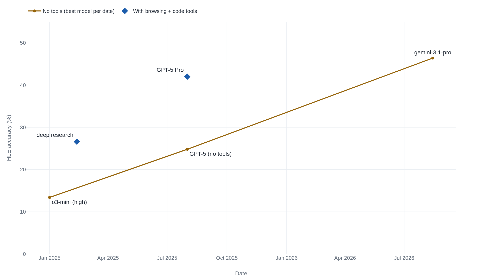

Humanity's Last Exam only admits questions today's models fail
Its scores start near zero by design and climb fast, which is how a 26% run using browsing tools got read as the frontier of human knowledge.
Why this matters
You keep meeting one figure attached to Humanity's Last Exam, usually a low one, and usually offered as a reading on how close AI has come to human expertise. This lesson shows how that figure is built: who writes the questions, why a question counts only if today's models already fail it, and how a second model grades the answers. It also shows what the number tracks as it climbs. By the end you will be able to read an HLE score the way its makers do, and to spot the one move that turned a 26% result into a headline about the frontier of human knowledge.
- 01
- MMLU: Measuring Massive Multitask Language Understanding: the broad multiple-choice test models saturated, which HLE was built to replace.
- 02
- lastexam.ai: the public questions and the live dataset itself.
The score starts near zero
Humanity's Last Exam is a set of 2,500 public questions in mathematics, the humanities, and the natural sciences, each with a single known answer that, in the authors' words, "cannot be quickly answered via internet retrieval."1 It was built because the tests before it had run out of room. Models now top 90% on MMLU, a broad multiple-choice exam of general knowledge, so a passing score there no longer separates one model from the next.2
On Humanity's Last Exam they separate again, because almost all of them fail. As read on 2026-08-14, the top model on the official no-tool leaderboard, gemini-3.1-pro-preview, answered 46.44% of the questions correctly. The board is live and rises over time.3 At the January 2025 launch the best model reached 13.4%, and most sat in the single digits.2 That gap, near zero at launch and under 47% today, is the number people quote. How it is produced explains both halves: why it starts so low, and why it rises so fast.
Only questions the models already miss
The questions come from people, not a model. Nearly 1,000 subject-expert contributors from more than 500 institutions across 50 countries wrote them, and reviewers holding a graduate degree in the field checked each one across two rounds.2
What makes the set unusual is the filter. Before a question is admitted, it is put to several frontier models. A multiple-choice question is kept only if those models, on average, do worse than random guessing; a short-answer question is kept only if the models cannot solve it.2 The pipeline logged about 70,000 model attempts and produced roughly 13,000 questions that stumped the models, later narrowed to the released set.2 The test is, by design, the questions the strongest models of the day get wrong.
The near-zero launch score follows directly from that rule. Every question was chosen because strong models missed it, so a low score measures a model against a pool built from those failures, not against knowledge in general. Raise the models and the filter has to be rebuilt, which is part of why the score climbs as fast as it does.
The composition is roughly what you would expect of an exam. Of the 2,500 public questions, a fifth to a quarter are multiple-choice, the rest are short-answer, and about a tenth carry an image. The paper and the official site give slightly different splits: 24% versus about 20% multiple-choice, and 14% versus about 10% multimodal.24 The set has also moved. The January 2025 announcement described 3,000 questions.5 The release settled at 2,500, with a private held-out set kept back to check for overfitting.1 Questions later flagged as flawed or web-searchable have been "removed and replaced."4
A model marks the answers
Grading is automatic. A separate model, o3-mini, compares each answer to the stored correct one and decides whether they match, allowing equivalent forms such as a decimal for a fraction.2 No person marks the runs, which is what lets thousands of answers be scored the same way every time.
The score arrives with a second number that gets less attention: calibration error. Every model is asked for both an answer and its confidence, from 0 to 100%, and calibration error measures how far that confidence sits from how often the model is actually right.4 A model that is 90% confident but 10% correct is badly calibrated, and that pairing is the failure the benchmark was built to expose.
| Model | Accuracy | Calibration error |
|---|---|---|
| GPT-4o | 2.7% | 89% |
| Claude 3.5 Sonnet | 4.1% | 84% |
| o1 | 8.0% | 83% |
| DeepSeek-R1 | 8.5% | 73% |
| o3-mini (high) | 13.4% | 80% |
At launch the numbers were stark in both columns. The models scored in single digits and were confident anyway, with calibration error from 73% to 89%.2 Being wrong is one thing. Being wrong while sure is what the second column records. Even now the leaders carry calibration error between 38% and 57%, so overconfidence shrinks as scores rise without clearing.3
The 26% that used tools
None of the numbers so far let the model use tools. The leaderboard runs every model closed-book, at temperature 0, on the public questions, with no browsing and no code.3 Allow tools and the score jumps. OpenAI's GPT-5 answered 24.8% with reasoning and no tools, and 42.0% when the same family was given web search and a Python tool.6 The questions did not change. The model's access did.
That gap is where the benchmark has misled people. On 12 February 2025, Fortune reported that OpenAI's deep research "can complete 26% of Humanity's Last Exam," and described the test as a benchmark for the frontier of human knowledge.7
"OpenAI's deep research can complete 26% of Humanity's Last Exam—a benchmark for the frontier of human knowledge."7 Fortune, 12 February 2025
Two things are wrong with reading it that way. The 26.6% run used web browsing and Python tools, while the roughly 9% scores it was called a "nearly threefold jump" over were no-tool leaderboard numbers.7 Setting a tool-assisted score against no-tool scores compares two different tests. And the questions are closed-ended academic problems with known answers, not a survey of everything a world-class expert holds, so "the frontier of human knowledge" claims more than the test measures.2

Put on one axis, the error is visible. The no-tool scores form one rising line, and the tool-assisted runs sit above it as separate points. Reading a point off the upper set as though it belonged to the lower line is exactly the jump Fortune described.
What a high score would not prove
So what would a high HLE score show? The authors are explicit about the limit.
"High accuracy on HLE would demonstrate expert-level performance on closed-ended, verifiable questions and cutting-edge scientific knowledge, but it would not alone suggest autonomous research capabilities or 'artificial general intelligence.'"2 Humanity's Last Exam, arXiv:2501.14249
A top score means a model answers hard, closed academic questions. It does not mean the model can carry out open-ended research.2 The misreading runs against the benchmark's own stated scope, not against a critic's.
There is a second limit, in the answer key itself. FutureHouse, an AI research lab, audited 321 text-only chemistry and biology questions and found that 29%, give or take 3.7 points, had answer keys that conflict with the peer-reviewed literature.8 The HLE team's own re-check of a subset put the problematic share lower, at about 18%.8 Take the range as 18% to 29%: on that slice, close to a quarter of the questions can mark a model wrong for giving the better answer. Part of what a low score measures is the test's own errors.
The takeaway
An HLE score is manufactured to start near zero and to rise. The questions are chosen because strong models already miss them, a second model grades the answers, and the leaderboard runs closed-book. So a low number reflects a pool built from models' failures, and a fast climb reflects better models against a fixed pool. Two readings the number cannot bear: that a tool-assisted score belongs beside the no-tool board, and that any score, high or low, settles whether a model has reached human expertise across the board. When you next meet a percentage on Humanity's Last Exam, the two questions that decode it are whether the tools were on, and what share of the pool the answer key even gets right.
- 01
- Humanity's Last Exam (Nature): the peer-reviewed paper, with the full method and per-model results.
- 02
- The Decoder on the answer-key audit: a plain-language write-up of the FutureHouse chemistry and biology finding.
Sources
- arXiv · Humanity's Last Exam (abstract, Center for AI Safety and Scale AI)
- arXiv · Humanity's Last Exam (full text, v11)
- Scale AI / CAIS · Humanity's Last Exam leaderboard (accessed 2026-08-14)
- Center for AI Safety · Humanity's Last Exam official site
- arXiv · Humanity's Last Exam (January 2025 version)
- Vellum · GPT-5 benchmarks (relaying OpenAI's reported HLE figures)
- Fortune · "OpenAI's deep research can complete 26% of Humanity's Last Exam"
- FutureHouse · Audit of HLE chemistry and biology answers